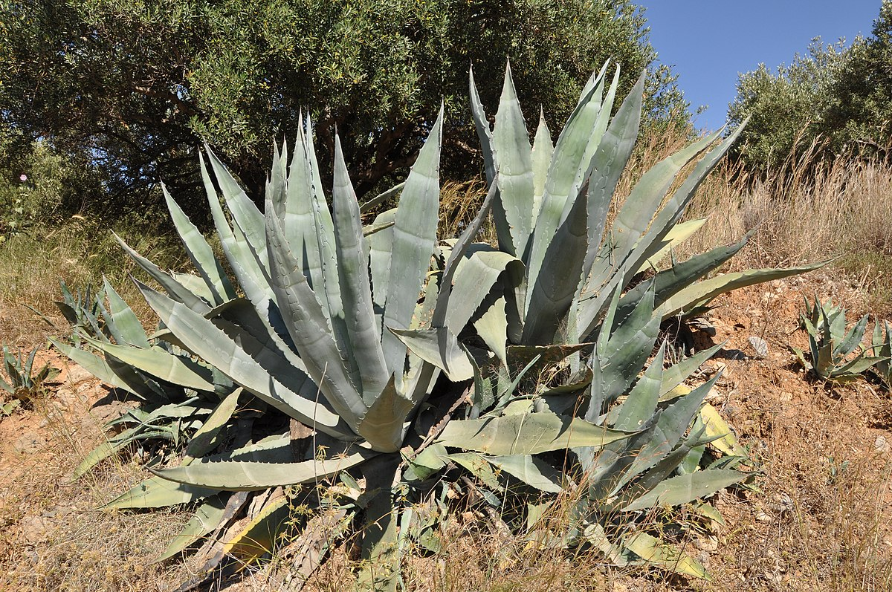
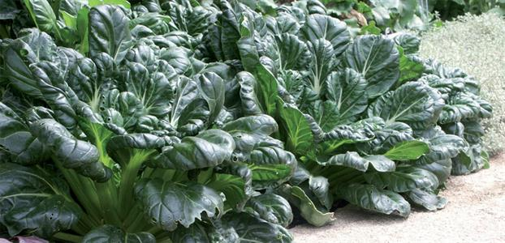

Taiga Consumables
Cattail, Garlic, Onions, Sorrel, Common Nettle, Bearberry, Crowberry

Temperate Deciduous Forest Consumables
Amaranth,
Asparagus,
Blackberries,
Blueberries,
Raspberries,
Burdock,
Cattail,
Arrow Root,
Potato,
Chufa,
Daylily

Chapparal Consumables
Abal, Agave, Yucca
Grassland Consumables
Barley, Rye, Sunflowers, Sugar Beets, Corn, Rice

Tropical Rainforest Consumables
Spinach Arugala, Beans, Peppers, Tomatoes, Asian Greens, Citrus
